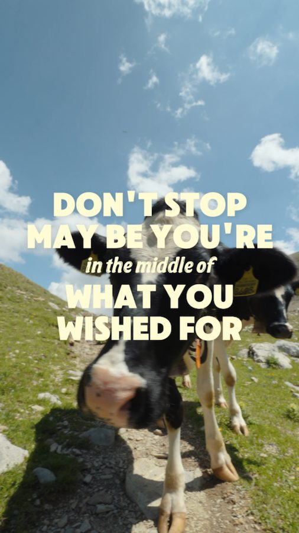

Lenk Simmental Tourismus — Leiterli × Iffigsee
Fünf Social-Media-Reels, die zeigen, warum sich die Wanderung zum Iffigsee lohnt — humorvoll, authentisch, mit ein paar ungeplanten Kuh-Begegnungen.
Das Projekt
Fünf Reels, eine Wanderung
Für Lenk Simmental Tourismus haben wir die Wanderung von der Leiterli-Bergstation zum Iffigsee als kleine Social-Media-Kampagne begleitet — fünf kurze, vertikale Reels, die zeigen, wie es sich wirklich anfühlt, dort oben unterwegs zu sein. Kein Hochglanz-Imagefilm, sondern ehrliche, humorvolle Momente: neugierige Kühe, die die halbe Route für sich beanspruchen, spontane Sprüche und ein Getränkestopp mit Capri-Sun mittendrin.
Der Ton ist bewusst leicht und ungefiltert gehalten — genau das, was auf Instagram und TikTok funktioniert, wenn eine Region nicht nur schön, sondern auch sympathisch wirken soll.
Die Reels
Fünf Reels, eine Route
Von der Bergstation bis zum See — klick dich durch alle fünf Clips.
Leistungen im Detail
Was wir geliefert haben
 ← Vorheriges Projekt
Franjo × Redbull × KTM
← Vorheriges Projekt
Franjo × Redbull × KTM
 Nächstes Projekt →
Kilian Huber GmbH — Zermatt
Nächstes Projekt →
Kilian Huber GmbH — Zermatt